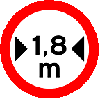

1-O candidato que for encontrado conduzindo veículo em desacordo com o disposto na Resolução 168 do CONTRAN terá a LADV (Licença Para Aprendizagem de Direção Veicular):
a)suspensa por 6 meses
b)recolhida por 6 meses
c)apreendida por 6 meses
d)retida por 6 meses
2-No Auto de Infração de Trânsito (AIT) precisam constar obrigatoriamente as seguintes informações, EXCETO:
a)tipificação da infração
b)local, data e hora do cometimento da infração
c)identificação do veículo
d)prontuário do condutor
3-São medidas administrativas, EXCETO:
a)retenção do veículo
b)remoção do veículo
c)multa
d)transbordo do excesso de carga
4-O pagamento da multa poderá ser efetuado, até a data do vencimento expresso na notificação, da seguinte forma:
a)por 90% do seu valor
b)por 80% do seu valor
c)pela metade do valor integral
d)sem desconto ou acréscimo
5-A uma infração de natureza grave são computados:
a)3 pontos
b)6 pontos
c)7 pontos
d)5 pontos
6-No Exame de Direção Veicular, se o candidato cometer uma infração grave:
a)perderá 3 pontos
b)será eliminado
c)perderá 2 pontos
d)perderá 1 ponto
7-O condutor que dirigir veículo portando Carteira Nacional de Habilitação (CNH) vencida há mais de trinta dias será punido com:
a)apreensão da CNH
b)multa, recolhimento da CNH e retenção do veículo
c)advertência e retenção do veículo
d)multa e remoção do veículo
8-A penalidade de suspensão do direito de dirigir será aplicada quando o condutor:
a)dirigir sem os equipamentos obrigatórios
b)alterar características originais do veículo
c)totalizar 20 pontos de infrações em 12 meses
d)cometer duas infrações gravíssimas em um ano
9-É um direito do condutor autuado interpor recurso:
a)ao CETRAN
b)à JARI
c)ao DETRAN
d)ao DENATRAN
10-Ao dirigir um veículo reprovado na inspeção de emissão de gases, o condutor está sujeito a:
a)multa, apenas
b)reciclagem compulsória quando da renovação da CNH
c)multa e retenção do veículo
d)advertência por escrito ao proprietário do veículo
11-A operação de carga ou descarga será regulamentada pelo órgão ou entidade com circunscrição sobre a via e é considerada:
a)parada
b)estacionamento
c)embarque
d)desembarque
12-À noite, em uma via totalmente iluminada, o condutor deve usar:
a)pisca-alerta
b)farol de neblina
c)luz baixa
d)luz alta
13-Em um cruzamento com rotatória, a preferência de passagem é:
a)do veículo que circula pela rotatória
b)do veículo que circula pela direita
c)do veículo que transporta passageiros
d)do veículo que vem da via mais congestionada
14-O cinto de segurança é obrigatório, em todas as vias do território nacional, para:
a)somente o condutor
b)condutor e passageiros do banco dianteiro
c)condutor e passageiros dos bancos dianteiro e traseiro
d)condutor e passageiros do banco traseiro
15-Dois veículos circulam numa via arterial em trecho não abrangido pela sinalização regulamentadora de velocidade. O veículo A circula a 90 km/h e o veículo B a 70 km/h. Quem está desrespeitando a velocidade máxima permitida?
a)dois veículos
b)somente o veículo B
c)somente o veículo A
d)nenhum dos dois
16-São vias rurais:
a)vias locais e coletoras
b)rodovias e estradas
c)vias de trânsito rápido
d)vias arteriais e locais
17-Nas vias providas de acostamento, a conversão à esquerda e a operação de retorno deverão ser feitas nos locais apropriados e, onde estes não existirem, o condutor deverá aguardar no acostamento:
a)à direita
b)10m antes do local onde será realizada a manobra
c)à esquerda
d)na faixa demarcada para esta finalidade
18-A ultrapassagem de outro veículo em movimento deverá ser feita pela esquerda, obedecida a sinalização regulamentar e as demais normas estabelecidas no Código de Trânsito Brasileiro, exceto quando o veículo a ser ultrapassado:
a)estiver em alta velocidade
b)estiver em baixa velocidade
c)estiver com o pisca-alerta ligado
d)estiver sinalizando o propósito de entrar à esquerda
19-Ao passar por uma bicicleta, a distância lateral a ser mantida pelo condutor será de:
a)2m
b)1,5m
c)1m
d)1,2m
20-Devem ser transportadas no banco traseiro crianças menores de:
a)10 anos
b)7 anos
c)6 anos
d)8 anos
21-Os sinais de regulamentação têm as cores:
a)vermelha, branca e preta
b)amarela e preta
c)laranja e preta
d)verde e branca
22-Os sinais de advertência têm as cores:
a)vermelha, branca e preta
b)amarela e preta
c)laranja e preta
d)verde e branca
23-A placa abaixo significa:
a)passagem obrigatória no túnel
b)estreitamento de pista ao centro
c)passagem obrigatória no centro
d)pista única ao centro
24-A placa abaixo significa:
a)saliência ou lombada
b)lombada com saliência
c)saliência na via
d)quebra-molas na via
25-A placa abaixo significa:
a)curva acentuada à direita
b)curva permitida à direita
c)curva à direita
d)curva obrigatória à direita
26-A placa abaixo significa:
a)pista com cascalho
b)projeção de cascalho
c)pista sem asfalto
d)pista de brita
27-A placa abaixo significa:
a)não precisa parar
b)parada de veículos
c)passe sem parar
d)parada obrigatória
28-A placa abaixo significa:
a)peso bruto total máximo proibido
b)peso bruto total mínimo permitido
c)peso bruto permitido
d)peso bruto total máximo permitido
29-A placa abaixo significa:

a)largura mais ou menos permitida
b)largura máxima permitida
c)largura máxima proibida
d)largura mínima permitida
30-A placa abaixo significa:
a)pedestres e ciclistas na pista
b)ciclistas à esquerda, pedestres à direita
c)ciclistas e pedestres à direita
d)cuidado, pedestres e ciclistas circulando
31-São pré-requisitos ao candidato à habilitação, EXCETO:
a)ser maior de 18 anos
b)saber ler e escrever
c)possuir documento de identidade
d)ser penalmente imputável
32-O candidato poderá repetir o exame no qual tenha sido reprovado:
a)a partir do 15º dia após a divulgação do resultado
b)15 dias após a divulgação do resultado
c)no 15º dia após a divulgação do resultado
d)imediatamente
33-A Carteira Nacional de Habilitação será conferida ao condutor no término de um ano, desde que o mesmo não tenha cometido durante os 12 meses em que permaneceu com a Permissão Para Dirigir:
a)nenhuma infração de natureza grave ou gravíssima ou seja reincidente em infração leve
b)nenhuma infração de natureza grave ou gravíssima ou atinja a pontuação máxima permitida por lei
c)nenhuma infração de natureza grave ou gravíssima ou seja reincidente em infração média
d)nenhuma infração de natureza gravíssima ou atinja a pontuação máxima permitida por lei
34-São órgãos normativos do Sistema Nacional de Trânsito, EXCETO:
a)CONTRAN
b)CETRAN
c)CONTRANDIFE
d)JARI
35-A que órgão compete criar as Câmaras Temáticas?
a)DENATRAN
b)CONTRAN
c)DETRAN
d)JARI
36-O candidato que for encontrado conduzindo veículo em desacordo com o disposto na Resolução 168 do CONTRAN terá a LADV:
a)suspensa por 6 meses
b)recolhida por 6 meses
c)apreendida por 6 meses
d)retida por 6 meses
37-Quanto à tração, os veículos classificam-se em:
a)de aprendizagem
b)de passageiro
c)de propulsão humana
d)de carga
38-O candidato à obtenção da habilitação de categoria D deverá preencher os seguintes requisitos:
a)ser maior de 21 anos, possuir CPF, saber ler e escrever
b)ser maior de 21 anos, possuir habilitação B há pelo menos 2 anos ou C há pelo menos 1 ano e não ter cometido nenhuma infração de natureza grave ou gravíssima, ou ainda ser reincidente em infrações médias nos últimos doze meses
c)somente saber ler e escrever e possuir documento de identidade
d)ser maior de 18 anos, saber ler e escrever, possuir identidade e CPF
39)O processo do candidato à habilitação permanecerá ativo no órgão ou entidade executivo de trânsito pelo prazo de:
a)06 meses
b)24 meses
c)durante a validade do exame de sanidade física e mental
d)12 meses
40-O veículo será identificado externamente por meio de:
a)caracteres no chassi
b)caracteres no monobloco
c)placas dianteira e traseira
d)selos de emplacamento